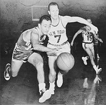

¿Qué es la nba?
La National Basketball League, más conocida como NBA, es considerada la mejor competición de baloncesto del mundo. La National Basketball Association, más conocida simplemente por sus siglas NBA, es una liga privada de baloncesto profesional que se disputa en Estados Unidos desde 1949, cuando se fusionaron las ligas profesionales National Basketball League y la Basketball Association of America.

¿Como se juega el básquetbol?
En la temporada regular, cada equipo disputa 82 partidos (41 de local y 41 de visitante). El objetivo del baloncesto es marcar más puntos que el equipo contrincante, encestando el balón en el cesto contrario e impidiendo a los jugadores contrincantes encestar en la propia. Una canasta lanzada desde el tiro libre vale 1 punto. Una canasta lanzada desde la zona de tiro 2 vale 2 puntos.
¿En que año se fundo?
6 de junio de 1946 (77 años) como BAA en la Ciudad de Nueva York, Nueva York (Estados Unidos).

¿Donde se encuentra las oficinas de la nba?
Distrito de Manhattan, en Nueva York (Estado de Nueva York, Estados Unidos).